무선설비산업기사 (2003-03-16 기출문제)
1과목: 디지털 전자회로
1. 논리식
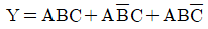
를 가장 간단히 한 것은 ?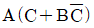
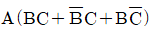
- A(B+C)
- ABC
(정답률: 알수없음)

2. 여러 개의 입력 신호 가운데 하나를 선택하여 출력하는 동작을 하는 것은 ?
- 인코더
- 멀티플렉서
- 디멀티플렉서
- 페리티 체크회로
(정답률: 알수없음)
3. 다음 부울식을 간소화 할 때 맞는 것은 ?
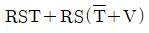
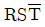
- RSV
- RST
- RS
(정답률: 알수없음)
4. 증폭이득이 60[dB]인 증폭기에서 20[%]의 찌그러짐이 발생했다. 이것을 2[%] 이내로 개선하기 위해서 걸어야 할 부궤환은?
- 10[dB]
- 20[dB]
- 30[dB]
- 40[dB]
(정답률: 알수없음)
5. 그림과 같은 연산증폭기의 출력 전압 Vo는 ?
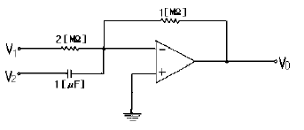
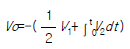
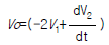
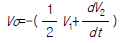
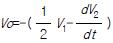
(정답률: 알수없음)
6. 베이스 변조회로에 대한 설명으로 틀리는 것은 ?
- 변조에 필요한 전력이 적다.
- 출력에 불필요한 고조파가 생겨 효율이 저하한다.
- 변조회로의 트랜지스터를 C급으로 바이어스 한다.
- 저출력의 변조도가 작은 경우에 사용한다.
(정답률: 60%)
7. 쌍안정 멀티바이브레이터의 결합저항에 병렬로 부가한 콘덴서의 사용 목적은 ?
- 증폭도를 높인다.
- 스위칭 속도를 높인다.
- 베이스 전위를 일정하게 유지시킨다.
- 에미터 전위를 일정하게 유지시킨다.
(정답률: 64%)
8. 브리지 정류회로에서 교류 220[V]를 정류시킬 때 최대전압은 약 몇[V] 인가 ?
- 140
- 311
- 432
- 180
(정답률: 알수없음)
9. 아래에 열거한 항목 중에서 트랜지스터 CE(공통 이미터)증폭기의 입력전압, 입력전류, 출력전압, 출력전류를 올바르게 표시한 항은?
- ① 입력전압 : VBC ② 입력전류 : IB ③ 출력전압 : VEC ④ 출력전류 : IE
- ① 입력전압 : VEB ② 입력전류 : IE ③ 출력전압 : VCB ④ 출력전류 : IC
- ① 입력전압 : VEB ② 입력전류 : IB ③ 출력전압 : VEC ④ 출력전류 : IC
- ① 입력전압 : VBE ② 입력전류 : IB ③ 출력전압 : VCE ④ 출력전류 : IC
(정답률: 알수없음)
10. 그림과 같은 발진회로의 적합한 발진조건과 회로명은 ?
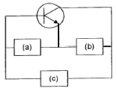
- (a)유도성(b)용량성(c)용량성회로명: 콜피츠 발진회로
- (a)용량성(b)유도성(c)용량성회로명: 콜피츠 발진회로
- (a)유도성(b)용량성(c)유도성회로명: 하틀리 발진회로
- (a)유도성(b)유도성(c)용량성회로명: 하틀리 발진회로
(정답률: 알수없음)
11. DC 결합과 AC 결합이 함께 사용되는 회로는 ?
- 비안정 멀티바이브레이터
- 단안정 멀티바이브레이터
- 쌍안정 멀티바이브레이터
- 블로킹 발진기
(정답률: 알수없음)
12. FM 검파회로로서 사용되지 않는 회로는 ?
- PLL 검파
- Ratio 검파
- Foster-seeley형 검파
- Collector 검파
(정답률: 알수없음)
13. 접합 트랜지스터의 스읫칭 속도를 빠르게 하기위한 방법으로 적당한 것은 ?
- 베이스 회로에 직열로 저항을 접속한다.
- 베이스 회로에 인덕턴스를 접속한다.
- 베이스 회로에 저항과 콘덴서를 병열 접속하여 연결한다.
- 베이스 회로에 제너 다이오드를 접속한다.
(정답률: 알수없음)
14. 그레이코드 101101을 2진수로 변환하면 ?
- 110110
- 111011
- 011011
- 111101
(정답률: 알수없음)
15. 트랜지스터의 베이스접지 전류증폭률을 α라 하면 이미터 접지의 전류증폭률 β는 어떻게 표시되는가 ?
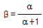
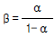
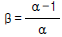
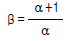
(정답률: 알수없음)
16. 그림의 증폭 회로에서 S를 단락 시켰을 경우에도 그 값의 변화가 거의 없는 것은 어느 것인가 ? (단,
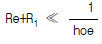
)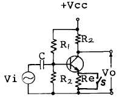
- 증폭기의 입력 저항
- 증폭기의 안정도
- 증폭기의 전류 이득
- 증폭기의 전압 이득
(정답률: 알수없음)
17. 반가산기(Half-adder)의 구성 요소로 맞는 것은 ?
- JK 플립플롭
- 두개의 AND 게이트
- EOR과 AND 게이트
- 1개의 반동시 회로와 OR 게이트
(정답률: 알수없음)
18. 그림의 논리회로는 어떤 논리작용을 하는가 ?
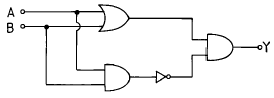
- AND
- OR
- NAND
- Exclusive OR
(정답률: 알수없음)
19. J-K 플립-플롭은 두개의 입력 데이터에 의하여 출력에서 몇개의 조합을 얻을수 있는가 ?
- 2
- 4
- 8
- 16
(정답률: 알수없음)
20. 그림과 같이 증폭기를 3단 접속하여 첫단의 증폭기 A1에 입력전압으로 2[㎶]인 전압을 가했을때 종단증폭기 A3의 출력전압은 몇[V]가 되는가? (단, A1, A2, A3의 전압이득 G1, G2, G3는 각각 60[㏈], 20[㏈], 40[㏈]이다.)
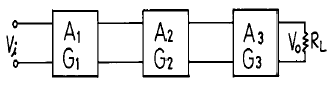
- 20[V]
- 2[V]
- 0.2[V]
- 20[㎷]
(정답률: 알수없음)
2과목: 무선통신 기기
21. 다음 그림은 방향성 결합기의 원리도이다. 다음중 방향성 결합기에 대하여 잘못 설명한 것은?
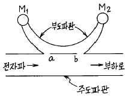
- 계기 M2는 반사파에 비례한 지시를 한다.
- a점 b점 사이의 간격은 1/4파장이다.
- 이 계기는 정재파비를 구할수 있다.
- 이 계기는 반사계수를 구할수 있다.
(정답률: 알수없음)
22. 주파수 변조에서 주파수 편이는 무엇에 비례하는가 ?
- 변조파의 진폭
- 반송파의 진폭
- 변조파의 주파수
- 반송파의 주파수
(정답률: 알수없음)
23. FM 수신기에서 진폭제한기에 대한 설명중 틀린 것은 ?
- 진폭제한기는 중간 주파증폭기의 앞단에 접속된다.
- 충격성 잡음의 영향을 경감할 수 있다.
- 일정한 레벨이상이 되면 그 이상의 레벨을 제한한다.
- 진폭제한기를 종속접속하면 그 효과가 크다.
(정답률: 알수없음)
24. VHF대에서 FM 통신 방식이 많이 사용되는 이유는?
- 고속 통신에 적합하기 때문에
- 변조가 쉽게 이루어지므로
- 주파수 대역이 넓게 취해지므로
- 비화성이 있기 때문에
(정답률: 알수없음)
25. 오실로스코프로 변조도를 측정한 결과 파형이 그림과 같다고 한다. 이때 변조도는 ?
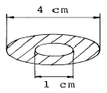
- 50 %
- 60 %
- 70 %
- 80 %
(정답률: 알수없음)
26. 수신한계 레벨이 가장 낮은 것은?
- 대역폭이 넓고 수신기 잡음지수(NF)가 큰 것
- 대역폭이 좁고 수신기 잡음지수(NF)가 작은 것
- 대역폭이 넓고 수신기 잡음지수(NF)가 작은 것
- 대역폭이 좁고 수신기 잡음지수(NF)가 큰 것
(정답률: 알수없음)
27. AM무선 송신기에서 사용하지 않는 회로는 ?
- 발진 회로
- 완충 증폭 회로
- 전력 증폭 회로
- AVC 회로
(정답률: 알수없음)
28. 위성중계기에서 대전력증폭기로 사용되는 것은?
- TWTA
- MAGNETRON
- IMPATT DIODE
- GaAs MESFET
(정답률: 알수없음)
29. C급 전력증폭기의 출력을 100[W], 컬렉터 효율 70[%], 공진회로의 Q가 무부하시 200, 부하시 15로 하였을때 컬렉터 입력전력은 대략 얼마인가?
- 925[W]
- 201[W]
- 155[W]
- 108[W]
(정답률: 알수없음)
30. 다음 중 진폭변조(AM) 방식에 해당되는 것은?
- 주파수편이변조(FSK)
- 위상편이변조(PSK)
- 펄스폭변조(PWM)
- 잔류측파대변조(VSB)
(정답률: 알수없음)
31. 주파수 변조(FM) 중 직접 FM 방식에 속하지 않는것은 ?
- VCO 를 사용한 FM 회로
- 브리지형 위상변조방식
- 리액턴스 FET를 사용한 회로
- PLL을 이용한 FM 회로
(정답률: 알수없음)
32. 각 정류회로의 맥동율중 맞지 않는 것은 ? (단, 저항 부하시 임)
- 단상반파 정류회로 : 1.21
- 단상전파 정류회로 : 0.482
- 3상반파 정류회로 : 1.23
- 3상전파 정류회로 : 0.042
(정답률: 알수없음)
33. 정격부하때의 출력 전압이 50[V]인 전원이 있다. 무부하 상태에서의 출력 전압이 55[V]로 증가한다면 전원 전압변동률은 ?
- 50[%]
- 100[%]
- 0.1[%]
- 10[%]
(정답률: 알수없음)
34. 무선 수신기의 일반적인 조건 중 틀린 것은?
- 감도가 우수할 것
- 선택도가 높을 것
- 안정도가 좋을 것
- 왜곡이 많을 것
(정답률: 알수없음)
35. 고니오 미터(gonio-meter)는 무엇을 측정할 때 사용하는 가 ?
- 전파의 도래각
- 대지의 정전용량
- 방송출력
- 상호 인덕턴스
(정답률: 알수없음)
36. 다음 중 INMARSAT의 구성요소가 아닌 것은 ?
- OCC
- NCS
- CES
- DSC
(정답률: 알수없음)
37. 고주파 증폭기의 이득이 30[㏈],변환이득이 -3[㏈]인 수신기에 5[㎶]의 고주파 전압을 가하였더니 검파기 입력에 0.5[V]를 얻었다. 중간 주파 증폭기의 이득은 ?
- 67[㏈]
- 73[㏈]
- 83[㏈]
- 130[㏈]
(정답률: 알수없음)
38. 중간 주파수 455[㎑]인 슈퍼헤테로다인 수신기에서 1000[㎑]에 대한 영상주파수는 얼마인가 ?
- 1455[㎑]
- 1545[㎑]
- 1910[㎑]
- 545[㎑]
(정답률: 62%)
39. FM수신기에서 저주파 잡음을 차단하는 역할을 하는 것은?
- 주파수 변별기
- 리미터
- 국부 발진기
- 스켈치 회로
(정답률: 알수없음)
40. 다음은 X - tal 발진기의 발진 주파수 변동 원인과 그 대책이다. 이중 틀린 것은 ?
- 주위 온도의 변동 : 항온조 사용
- 부하의 변동 : 다음 단과의 결합을 밀하게 한다.
- 전원 전압의 변동 : 정전압 전원을 이용
- 기계적 진동 : 방진 장치를 한다.
(정답률: 알수없음)
3과목: 안테나 개론
41. 자유공간내에 Hertz dipole 이 있다. 그 복사전력이 40[W]라 할때 최대 복사방향 1[㎞]에서의 전계강도는 ?
- 0.03 [V/m]
- 0.04 [V/m]
- 0.⑤ [V/m]
- 0.07 [V/m]
(정답률: 알수없음)
42. 전리층에서 반사될 때의 감쇠인 제2종 감쇠의 특징을 바르게 설명한 것은?
- MUF 근처에서 감쇠가 최대로 되며, 파장이 길수록 심하다.
- MUF 근처에서 감쇠가 최대로 되며, 파장이 짧을수록 심하다.
- MUF 근처에서 감쇠가 최소로 되며, 파장이 길수록 심하다.
- MUF 근처에서 감쇠가 최소로 되며, 파장이 짧을수록 심하다.
(정답률: 알수없음)
43. 다음중 텔레비젼 수신용 안테나로 사용되지 않는 것은 ?
- 브라운 안테나
- 인라인 안테나
- 코니컬 야기 안테나
- U라인(line) 안테나
(정답률: 알수없음)
44. 파라보라 안테나(parabola antenna)의 1차 복사기로 사용되지 않는 것은 ?
- 원주형 혼(horn)
- λ/2 다이폴(dipole)
- 슬롯(slot) 안테나
- 전파렌즈(Lens)
(정답률: 알수없음)
45. 다수의 반파장 안테나를 동일 평면상에 규칙적인 종횡으로 배열하고, 각 소자에 동일 진폭, 동일 위상의 전류를 급전하면 배열면과 직각 방향으로 예민한 지향성을 갖는 안테나는?
- 루프(Loop) 안테나
- 애드콕(Adcock) 안테나
- 롬빅(Rhombic) 안테나
- 비임(Beam) 안테나
(정답률: 알수없음)
46. 헤르츠 다이폴에서 발생하는 세가지 전자계에 관한 설명으로 옳지 않은 것은 ?
- 복사전계는 파장과 관계가 있다.
- 0.16λ 이내의 거리에서는 복사전계의 크기가 가장 크다.
- 정전계는 수반하는 자계가 없으며 에너지 이동이 없다.
- 복사계는 통신에 이용되고 있다.
(정답률: 알수없음)
47. 대지의 도전율이 나쁜 경우(건조지,암산,건물의 옥상등)에 적용되는 접지방식은?
- 지선망방식
- 카운터 포이즈방식
- 다중접지방식
- 동판을 지하에 매설하는 방식
(정답률: 알수없음)
48. 루우프 안테나와 수직 안테나를 조합하면 수평면내 지향성은 어떻게 되는가?
- 전방향성이 된다.
- 단일 지향성이 된다.
- 8자 지향성이 된다.
- 무지향성이 된다.
(정답률: 알수없음)
49. 고도가 높아질수록 수정굴절률 M이 감소하는 굴절율의 역전층에 대한 설명이다. 잘못 기재되어 있는 것은 ?
- 역전층에서는 전파통로의 곡율이 지표면의 곡율보다 작다.
- 가시거리 보다 먼거리까지 전파가 전파된다.
- 전파의 포획현상으로 역전층은 도파관과 같은 역할을 한다.
- 라디오 덕트가 발생한다.
(정답률: 알수없음)
50. 델린저 현상에 관한 설명으로 옳은 것은 ?
- 주간의 구역만 영향을 받는다.
- 30[㎒]이상의 주파수가 영향을 많이 받는다.
- F층은 전자밀도가 현저히 증가한다.
- 발생주기가 규칙적이다.
(정답률: 알수없음)
51. 다음 중 주파수 100[MHz] 이상에서 사용되는 안테나가 아닌 것은?
- 슈퍼 게인 안테나(Super gain antenna)
- 야기 안테나(Yagi antenna)
- 코너 리플렉터 안테나(Corner reflector antenna)
- 웨이브 안테나(Wave antenna)
(정답률: 알수없음)
52. 길이 3[m]의 반파장 안테나가 있을때 기본파의 고유주파수는 몇 [㎒]인가 ?
- 3
- 6
- 25
- 50
(정답률: 알수없음)
53. 동조 급전선에서 송신기의 결합회로와 급전선과의 접속점이 정재파 전류의 파복이 되는 경우에는 결합회로의 공진회로는 어떻게 해야 하나?
- 직병렬 공진회로
- 병렬 공진회로
- 직렬 공진회로
- 직결합 회로
(정답률: 알수없음)
54. 복사 저항 40[Ω], 손실 저항 10[Ω]인 안테나에 100[w]의 전력이 공급되고 있을 때의 복사 전력은 얼마인가 ?
- 80[W]
- 90[W]
- 100[W]
- 110[W]
(정답률: 알수없음)
55. 단파통신에 페이딩(Fading)에 대한 경감 방법으로 적합하지 않은 것은 ?
- 간섭성 페이딩은 공간 합성수신법을 사용한다.
- 편파성 페이딩은 편파 합성수신법을 사용한다.
- 흡수성 페이딩은 수신기에 AVC를 부가한다.
- 선택성 페이딩은 수신기에 AFC로 경감한다.
(정답률: 알수없음)
56. 특성임피던스 600[Ω] 및 150[Ω]의 선로를 임피던스 변성기로 정합시키고자 한다. 파장이 λ 일 때 삽입해야 할선로의 특성임피던스와 길이는?
- 75[Ω],λ/2
- 300[Ω],λ/3
- 300[Ω],λ/4
- 377[Ω],λ/4
(정답률: 알수없음)
57. 통신 선로의 임피던스를 정합시키는 이유는?
- 부하에 전력을 최소로 공급하기 위해
- 반사계수를 1로 만들기 위해
- 투과계수를 0으로 만들기 위해
- 반사파가 생기지 않도록 하기 위해
(정답률: 알수없음)
58. 전파가 전리층에 부딛쳤을때 그 주파수 이상으로 되면 투과하는 주파수를 무엇이라 하는가 ?
- 임계 주파수
- 자이로 주파수
- 최고사용 주파수
- 최저 주파수
(정답률: 알수없음)
59. 초단파(VHF)대 안테나로 적당하지 않은 것은?
- 롬빅(rhombic)안테나
- 슬리브(sleeve)안테나
- 브라운(brown)안테나
- 휩(Whip)안테나
(정답률: 알수없음)
60. 지름 3[㎜], 선간격 30[㎝]의 평행 2선식 급전선의 특성 임피이던스는 ?
- 약 300[Ω]
- 약 420[Ω]
- 약 590[Ω]
- 약 637[Ω]
(정답률: 알수없음)
4과목: 전자계산기 일반 및 무선설비기준
61. 그림에서 출력 X를 입력 A, B의 함수로 바르게 표시한 것은?
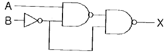
- X = AB
- X = A + B
- X = A'B + AB'
- X = AB + AB'
(정답률: 40%)
62. 다음 중 정보통신기기인증서를 교부한 때 전파 연구소장이 관보에 고시하는 내용이 아닌것은?
- 제조자 및 제조국가
- 인증연월일
- 정보통신기기의 명칭曺모델명
- 정보통신기기의 취급 설명서
(정답률: 알수없음)
63. 다음 중 비밀이나 중요내용이 통신에 의해 누설되는 주요 요인에 해당하지 않는 것은?
- 무선침묵 위반
- 과다한 통신소통
- 보고체제의 일원화
- 취약성있는 통신망 이용
(정답률: 알수없음)
64. 급전선에 공급되는 주파수마다의 스퓨리어스 발사의 평균 전력의 허용치가 50밀리와트 이하이고 기본주파수의 평균 전력보다 40데시벨 낮은 값에 해당되는 기본주파수대는?
- 30㎒ 초과 235㎒ 이하
- 235㎒ 초과 960㎒ 이하
- 9㎑ 초과 30㎒ 이하
- 960㎒ 초과 17.7㎓ 이하
(정답률: 알수없음)
65. 다음 중 O.S 의 종류가 아닌 것은 ?
- DOS
- UNIX
- VMS
- JCL
(정답률: 알수없음)
66. 전자파의 주파수별 분류에의한 일반명칭 중 EHF는 어느 주파수대를 말하는가?
- 300MHz∼3000MHz
- 3GHz∼30GHz
- 30GHz∼300GHz
- 300GHz∼3000GHz
(정답률: 알수없음)
67. 방송국 설비에서 사용하는 C3F전파의 공중선전력 표시 방법은?
- 반송파전력
- 규격전력
- 평균전력
- 첨두포락선전력
(정답률: 알수없음)
68. 필요주파수대폭의 표시방법으로 적합하지 아니한 것은?
- 12.5kHz = 12K5
- 180.7kHz = 181K
- 0.002Hz = H002
- 700.4MHz = G700
(정답률: 알수없음)
69. Turn-around time이 가장 빠른 system은 ?
- 시분할 방식(time sharing system)
- 온라인 방식(on-line system)
- 실시간 방식(real-time system)
- 일괄처리 방식
(정답률: 60%)
70. 마이크로프로세서에서 연산처리 한 후 연산 결과의 상태를 표시하는 레지스터는?
- 범용 레지스터
- 플레그 레지스터
- 콘트롤 레지스터
- 인덱스 레지스터
(정답률: 30%)
71. 전자파적합등록대상기기로서 인증이 면제되는 기기는?
- 가정용 전기기기
- 방송용 수신기기
- 전시용 수입기기
- 형광등
(정답률: 알수없음)
72. CAM (Content Addressable Memory)에 대한 설명으로 옳은 것은 ?
- CAM의 기억소자들의 내용은 파괴적으로 읽을 수 있어야 효율적이다.
- CAM은 직렬판독회로가 있어야 하므로 하드웨어 비용이 저렴하다.
- CAM은 주소를 사용하지 않고 기억된 정보의 일부분을 이용하여 자료를 신속히 찾는다.
- CAM은 주소를 사용해서 기억된 정보를 신속히 읽어낸다.
(정답률: 알수없음)
73. 점유 주파수대 폭의 허용치가 3KHz인 전파형식이 아닌 것을 골라라.
- A3E
- R3E
- H3E
- J3E
(정답률: 알수없음)
74. 무선국 허가증의 기재 사항이 아닌 것은?
- 허가연월일 및 허가번호
- 무선국 종별 및 명칭
- 무선설비의 목록
- 허가의 유효 기간
(정답률: 알수없음)
75. 컴퓨터의 성능을 비교할때 사용되는 것이 아닌 것은 ?
- MIPS
- ACCESS TIME
- WORD SIZE
- BPI
(정답률: 알수없음)
76. 디지털 컴퓨터에서 특수한 응용을 위해 한 숫자에서 다음 숫자로 올라갈 때 한 비트만 변화되는 코드는?
- Gray코드
- BCD코드
- ASCII코드
- Excess-3코드
(정답률: 알수없음)
77. 10진법으로 한 자리수를 나타내려면 2진법으로 최소한 몇 개의 비트가 필요하겠는가 ?
- 2
- 4
- 8
- 10
(정답률: 알수없음)
78. 공중선계의 조건으로서 충족하지 못한 것은?
- 이득이 높고 능률이 좋을 것
- 정합이 충분할 것
- 만족스러운 지향성을 얻을 수 있을 것
- 주복사 각도의 폭이 충분히 클 것
(정답률: 알수없음)
79. 데이지 휠(daisy wheel)을 사용하는 프린터는 ?
- 활자식 라인 프린터
- 도트 매트릭스 프린터
- 레이저 프린터
- 잉크젯 프린터
(정답률: 알수없음)
80. 채널(channel)에 대한 설명으로 옳은 것은 ?
- 중앙처리장치의 지시를 받아 독립적으로 입출력 장치를 제어한다.
- 주기억장소를 각 프로세서에게 할당한다.
- 주기억장치와 중앙처리장치 사이에 위치한다.
- 목적프로그램을 주기억장치에 적재한다.
(정답률: 알수없음)
AND 게이트는 입력이 모두 참일 때 출력이 참이 되고, 그 외에는 거짓이 됩니다.
OR 게이트는 입력 중 하나 이상이 참이면 출력이 참이 되고, 모두 거짓일 때만 거짓이 됩니다.
따라서, 는 A가 참이고, B와 C 중 하나 이상이 참일 때 출력이 참이 되는 것입니다.
이를 논리식으로 나타내면 A(B+C)가 됩니다.